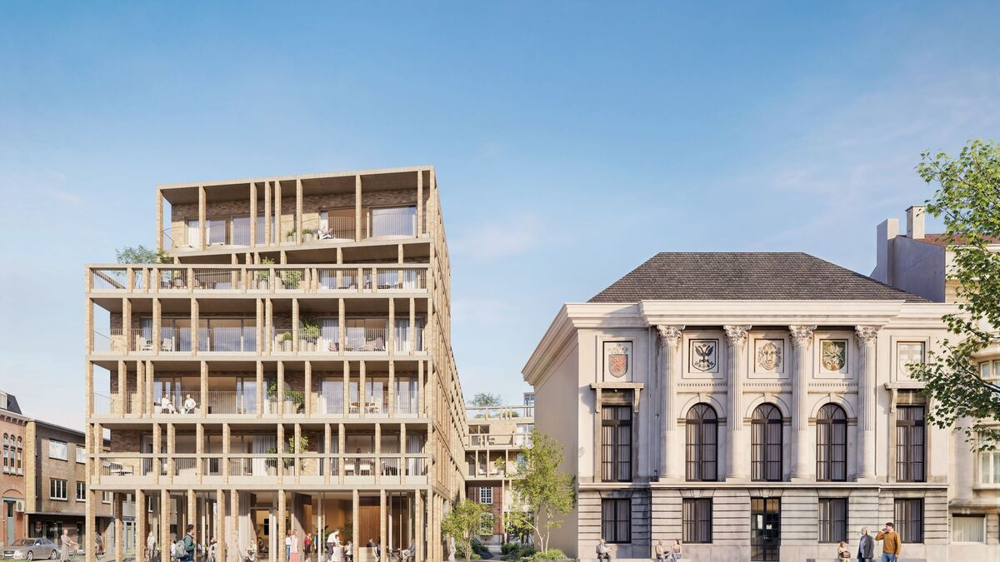

Een dag met AI.
Waar verliest een makelaar tijd? Met die vraag gingen we rond de tafel. Later die dag zaten we samen naar een trillend iPhone-beeld te kijken. Dit is hoe we van het ene bij het andere kwamen.
Wat doet iedereen bij Landbergh?
Het eerste woord van de dag was context. Daarna ging de vraag de tafel rond. Wie doet de huisbezoeken? Wie volgt verhuur op? Wie zorgt voor leads? Bij de waardebepalingen, brochures en mails herkenden collega’s hetzelfde werk dat telkens terugkomt. Over bellen met klanten was het team duidelijk: daar wilden we juist tijd voor vrijmaken.
Wat we leerdenEen goede eerste opdracht voor AI vind je door iemand zijn werkdag te laten vertellen. Een waardebepaling opmaken is een veel concreter vertrekpunt dan de vraag hoe je een kantoor automatiseert.
Wanneer vertrouw je een beeld?
Na de kennismaking verkenden we wat Claude en ChatGPT kunnen, hoe ze context gebruiken en wat een opdracht aan rekenwerk kost. Bij de voorbeelden van gegenereerde beelden kwam het gesprek terug bij vastgoed. Het team vertelde waarom het woningen zelf verkoopklaar maakt en inricht vóór de fotoshoot.
Wat we leerdenEen koper moet kunnen zien wat hij tijdens een bezoek kan verwachten. Toon je een mogelijke inrichting met AI, benoem dan bij het beeld dat het om een gegenereerd voorstel gaat.
We volgden één pand.
Het team liep een nieuwe verkoopopdracht door. Eerst de woning voorbereiden en de fotoshoot plannen, dan stukken opvragen, het dossier opbouwen en de brochure maken. Alleen al het dossier en het bijbehorende materiaal kosten volgens de deelnemers vier tot vijf uur. Onderweg komen dezelfde gegevens terug in OneDrive, in Zabun en in de teksten voor klanten.
Wat we leerdenLeg de actuele gegevens één keer vast in de pandfiche. Als de brochure, de social post en de conceptmail daaruit vertrekken, weet de collega die ze nakijkt waar elk feit vandaan komt.
Een map openen in Claude.
Op het scherm zagen we het verschil tussen een gesprek, een project en werken met bestanden in een map. Iedereen kreeg de opdracht om een nieuwe map te maken en die te koppelen. Bij enkele collega’s liep dat meteen anders: hun dossiers staan op een Microsoft Remote Desktop, terwijl Claude op de laptop draait.
Wat we leerdenEen bestand dat jij via je bureaublad kunt openen, is voor Claude pas bruikbaar als de gekozen werkomgeving het ook kan bereiken. De toegang tot OneDrive en het archief bleef een concrete vraag voor Landbergh.
Hoe vindt een collega de draad terug?
Van één map kwamen we bij het team terecht. De demo liet zien hoe een bedrijfswiki, projectnotities en gesprekken in Slack samen een dossier kunnen helpen volgen. Landbergh herkende het probleem aan uitschrijvingen die in het ene systeem verwerkt zijn en in het andere nog doorlopen. Het team bleek voor veel processen al draaiboeken te hebben.
Wat we leerdenDe bestaande draaiboeken geven een collega én Claude een vertrekpunt. Leg ook de laatste actie bij het dossier vast. Dan kan de volgende collega zien welke stap al gezet is.
“Stel mij vragen.”
In het praktijkgedeelte bekeken we eerst hoe het logo, de kleuren en de schrijfstijl van Landbergh in een skill passen. Daarna kwam iedereen zelf aan de beurt. De opdracht was om in te spreken of te typen wat je doet. In het voorbeeld van een makelaar die huisbezoeken doet, vroeg Claude door over de voorbereiding en de documenten die meegaan.
Wat we leerdenMet de drie woorden “stel mij vragen” kwamen vanzelf stappen boven die je als ervaren collega overslaat in je uitleg. Die antwoorden kun je bewaren in een persoonlijk Markdown-bestand. Een taak die telkens op dezelfde manier terugkomt, kun je daarna uitwerken als skill.
Van telefoonbeelden naar een teaser.
Na een voorbeeld van een project opgebouwd uit meetingnotities kwamen de videofragmenten op tafel. De opdracht aan Claude en HyperFrames werd heel precies: maak een verticale aankondiging voor zomer 2027, in de taal en huisstijl van Landbergh, met geanimeerde tekst en een vakantiegevoel. Samen bekeken we de eerste montage.
Wat we leerdenFormaat, sfeer en huisstijl konden we in de opdracht meegeven. Pas bij het afspelen zagen we waar de iPhone-opnames trilden. Dat gaf de volgende bewerking een concreet doel: rustiger beeld, zodat de titel leesbaar blijft.
Wat lukt al op kantoor?
Na de montage volgden vragen uit de eigen praktijk. Hoe krijgt een investeerder een persoonlijke mail in de Landbergh-huisstijl via Outlook? Welke beeldmodellen kun je in Krea gebruiken? Kunnen we ook de cijfers uit Google Analytics en Google Ads ophalen? Bij die laatste poging liep de demo vast op de toegang tot het Google-account.
Wat we leerdenEen mooie conceptmail op het scherm is een tussenstap. De proef is pas rond wanneer de opmaak ook in Outlook klopt. Voor marketingcijfers geldt hetzelfde: controleer met het juiste account of de cijfers werkelijk binnenkomen.
Wat we meenamen naar maandag
Iedereen kan beginnen met de eigen rolbeschrijving. De bestaande draaiboeken krijgen een plek in de bedrijfswiki. Wie een persoonlijke skill voor het hele team wil inzetten, laat die eerst nakijken en toevoegen door een beheerder.